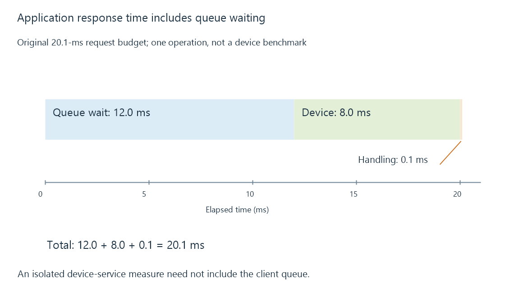

Storage latency: waiting for individual operations
Storage latency is the response time of an operation, including waiting in queues as well as the device's own work.
Storage latency answers “How long did this operation take?” Throughput answers “How much useful data arrived over an interval?” A system can score well on one and poorly on the other.
For a media server, individual latency affects the start of a read, artwork retrieval, seeking and small application-data operations. Continuing playback can absorb some delays through buffering, but a buffer must contain enough data before it can hide a pause.
The operation has a timeline
A read may wait in an operating-system queue before the device services it. A remote file read adds network and server processing. A cached read may bypass physical storage entirely.
An original request budget is:
Client queue wait: 12.0 ms
Device service: 8.0 ms
Completion handling: 0.1 ms
Observed response: 20.1 ms

The eight-ms service component is not the whole response time. Conversely, a tool reporting a device-level measure may not include all delay observed by the application. State the measurement layer before comparing numbers.
Averages can hide the operation that stalled
Suppose 99 operations each finish in 1 ms and one takes 500 ms. The average is 5.99 ms. That average is mathematically correct, yet none of the individual operations took 5.99 ms.
A distribution, maximum or suitable percentile helps reveal the slow tail. Percentile definitions and sample size matter: a small sample cannot precisely characterize a rare stall. A time series can also show whether delays occur together during a scan, import or wake event.
For a queued workload, increasing the number of outstanding operations may improve total throughput while increasing how long each request waits. That tradeoff is particularly visible when background work shares a device with interactive reads.
Why a small request can matter to a large film
Before reading the main body of a film, software may need to open its path, inspect metadata and seek to a starting location. Slow dependent operations add together even if they transfer few bytes. A high sequential MB/s result measures a different part of the job.
A write adds another question: was it accepted into a cache, or did the caller request synchronization to durable storage? Compare equivalent completion conditions. Storage caches explains why a rapid buffered completion and a durable write have different timelines.
To interpret a playback stall, relate delayed source reads to the player's reserve. If source bytes arrived promptly, the next investigation belongs in conversion or delivery rather than in the disk's latency.
See Also
- Sequential and random I/O in media workloads
- Storage caches: reusable reads and deferred writes
- Buffering, ready media and playback reserve